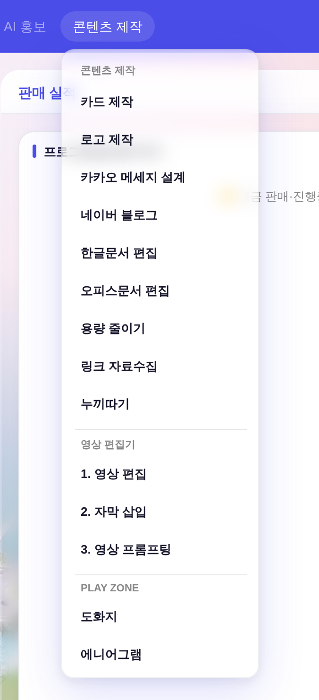
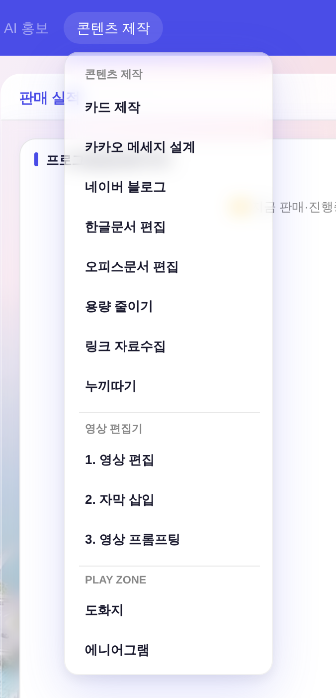
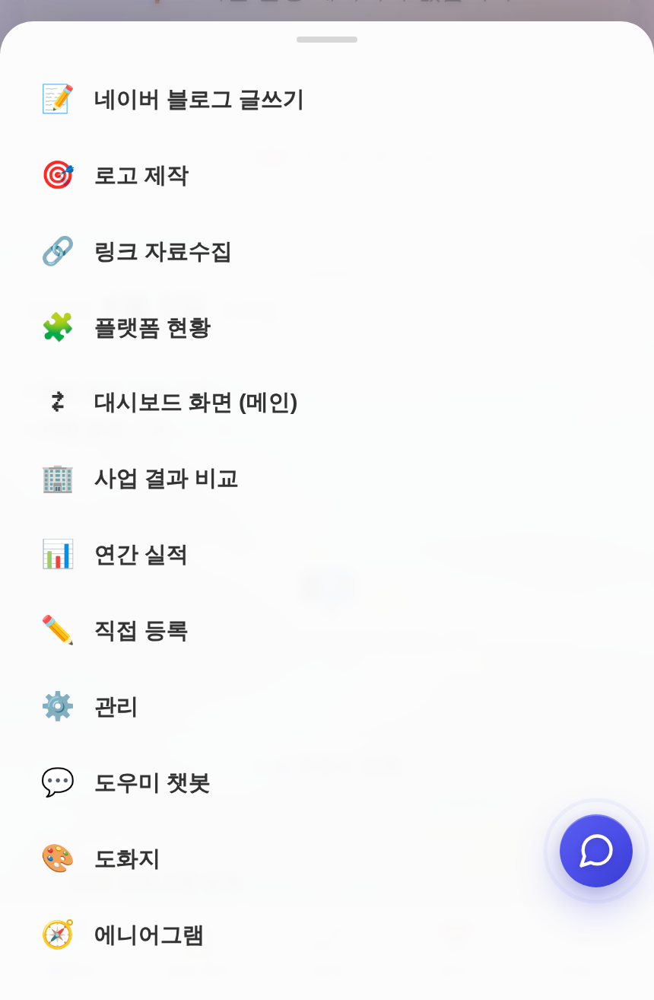
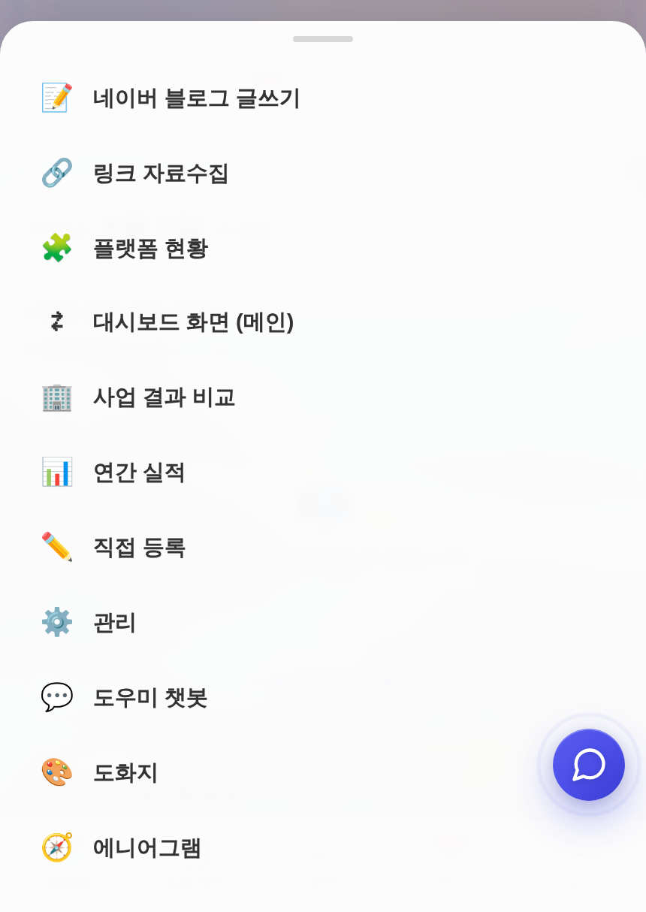

운영자 지시 260805 「메뉴에서 로고 제작 숨겨줘」 · 진입점 2곳(데스크톱 드롭다운 · 모바일 시트) 동시 내림 ·
화면 = 결정적 목데이터(tools/qa_mock_ops.mjs) ?qa=admin 경로 · 실API·실데이터·PII 미접촉.
메뉴 항목 1개만 내렸다. 기능은 지우지 않았다 — 도구 자체(openLogoMaker·_lm*)와 CSS(.lm-*)는 그대로 살아 휴면 상태다.
| 자리 | 전 | 후 | 비고 |
|---|---|---|---|
데스크톱 nav ▸ 「콘텐츠 제작」 드롭다운_contentMenuBuild (index.html L24213) | 항목 14개 (2번째 = 로고 제작) | 항목 13개 로고 제작 없음 | 카드 제작 바로 아래 자리가 비고, 「카카오 메세지 설계」부터 한 칸씩 올라온다. |
모바일 하단내비 ▸ 「더보기」 시트_bnavMore (index.html L24117) | 항목 12개 (2번째 = 🎯 로고 제작) | 항목 11개 로고 제작 없음 | 좁은 폭 진입점도 같이 내려야 「숨김」이 완결된다(한쪽만 내리면 모바일로 여전히 열림). |
openLogoMaker() 함수 · .lm-* CSS | 유지 | 유지 | 미접촉 — 롤백 = 주석 2줄 해제로 끝. 그리고 .lm-wrap·.lm-col은 「카카오 메세지 설계」가 공용 중이라 지우면 그쪽이 깨진다. |
openLogoMaker()를 직접 부르면 여전히 열린다.
메뉴에서 안 보이게 하는 것이 지시였고, 「기능 폐지(코드·CSS·Worker 프롬프트 제거)」는 별도 지시가 필요하다.nav 「콘텐츠 제작」 클릭 → 드롭다운. 「카드 제작」 다음이 곧바로 「카카오 메세지 설계」가 되고, 메뉴 높이가 항목 1개만큼 줄어든다(구분선·PLAY ZONE 섹션 순서는 그대로).


하단내비 ⋯ 더보기 → 시트. 🎯 줄이 빠지고 🔗 링크 자료수집이 두 번째로 올라온다.


| 항목 | 결과 | 실측값 |
|---|---|---|
디자인 게이트 tools/check_design.py | 통과 | raw hex index 1578/1578 · :root 2/0 · 고아 9(기존) · 이중정의 1(기존) — baseline 무변동(CSS 무편집) |
인라인 스크립트 구문(node --check) | 통과 | 8블록 전건 — 주석 처리한 줄이 menu.innerHTML=… 연결식 한가운데라 연결이 끊기지 않는지 확인 |
| 헤드리스 렌더 JS 에러 | 0건 | 전·후 각 2뷰포트(1440×900 · 430×860) 실클릭 경로 |
| 드롭다운 항목 실측 | 14 → 13 | 「로고 제작」만 빠지고 나머지 13개 텍스트·순서 동일 |
| 더보기 시트 항목 실측 | 12 → 11 | 「🎯로고 제작」만 빠지고 나머지 11개 동일 |
| 「카카오 메세지 설계」 공용 CSS | 무영향 | .lm-wrap·.lm-col 정의 미접촉 — 카카오 설계 셸이 이 레이아웃을 계승 중 |
주석 해제 2곳이면 원상 복구된다(양쪽 다 풀어야 데스크톱·모바일이 같이 돌아온다).
index.html _contentMenuBuild — +'<button … openLogoMaker() …>로고 제작</button>' 줄의 // 제거index.html _bnavMore — add('🎯','로고 제작','openLogoMaker()'); 줄의 // 제거각주 — 배경 대시보드 수치는 목데이터라 실제 실적과 무관하다(형태 재현용). 캡처는 deviceScaleFactor 2, 드롭다운은 메뉴 주변만 잘라냈다.